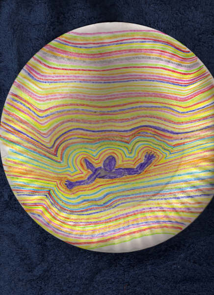

|
Color Spectrum
by Ron Dupuis
This work is protected by copyright.
It is reproduced here with the author's permission.
This is surprisingly like the painting Particulate Man, which I found on the sagewisdom.org website after I drew this on a paper plate with crayons.
It was my first experience with salvia. This is all I remember. I don't know if I was on my way in or on my way back.

|